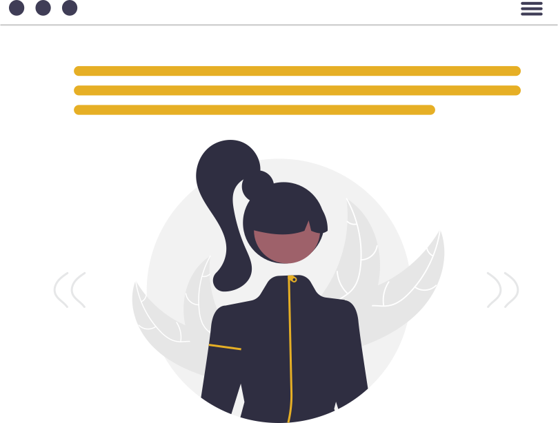

Sobre Ana Rosa
Olá, eu sou a Ana Rosa, sou uma baiana e atualmente moro em São Paulo. Como pode ter percebido, minha cor favorita é o amarelo! 😊
Vim da contabilidade, mas devido a alguns imprevistos da vida eu estou migrando para a área de tecnologia.
Escolhi começar pelo UI design por já gostar de arte e design desde muito nova, porém eu queria mesmo era aprender programação, então eu fui estudar a área de front-end, onde eu conheci o PrograMaria com aulas de HTML, CSS E JavaScript, tive meu primeiro contato com evento tech sendo esse especificamente voltado pra mulheres e fui muito bem acolhida. Fiz um curso totalmente em inglês da SheCodes também de front no qual me aprofundei nas tecnologias e conheci e trabalhei com o framework BootStrap.
Eu me aventurei na área de back-end com Java e Spring, banco de dados MySQL e React pro front no bootcamp da Generation Brasil no qual me marcou com meu primeiro projeto em grupo em Java que era um RPG de turnos e me diverti bastante no processo. Gostaria de dar uma olhadinha? 👀 Conheça um pouco sobre Helmont Adventure clicando aqui !